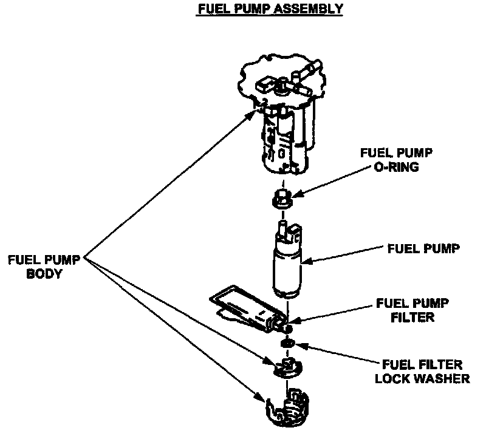
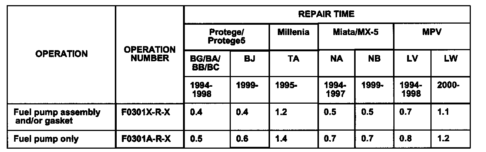

Fuel System - Fuel Pump/Component Replacement Guidelines
Bulletin No: 01-006/02Last Issued: 02/28/2002
Subject:
FUEL PUMP ASSEMBLY AND RELATED COMPONENT REPLACEMENT GUIDELINES
APPLICABLE MODEL(S)/VINs
1995-2002 Millenia
1999-2002 Protege
1999-2002 Miata
2000-2002 MPV
2002 Protege 5
DESCRIPTION
In some cases, it is not necessary to replace the entire Fuel Pump Assembly when servicing a fuel pump related concern.
If there are any concerns with the fuel pump system, then first determine which of the parts is inoperative, and replace only the failed part. The fuel sender unit, fuel pump, or fuel pump filter may be individually replaced rather than the entire Fuel Pump Assembly.
REPAIR PROCEDURE
1. Verify customer concern.
2. To troubleshoot the fuel pump system, refer to the appropriate Workshop Manual (section 01-14 FUEL SYSTEM).

3. If a Fuel Pump component requires replacement, replace only the individual failed part rather than the entire assembly. Only replace the entire Fuel Pump Assembly when the entire system is cause of concern.
4. Verify repair.
PARTS INFORMATION
Refer to the vehicle parts catalog for appropriate parts depending on required component.

WARRANTY INFORMATION
Use the appropriate SRT based on vehicle type and repair. The updates will be reflected on future SRT Manual.
NOTE:
Warranty claims submitted for a Fuel Pump Assembly will be denied or subject to debit when an individual replacement part could have been used to repair the vehicle (i.e. Fuel Sender Unit, Fuel Pump, Fuel Pump Filter, etc.).

DISCLAIMER